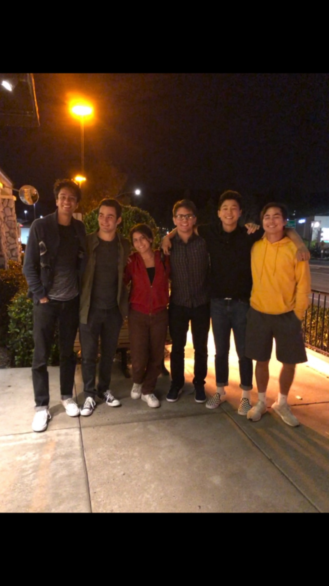
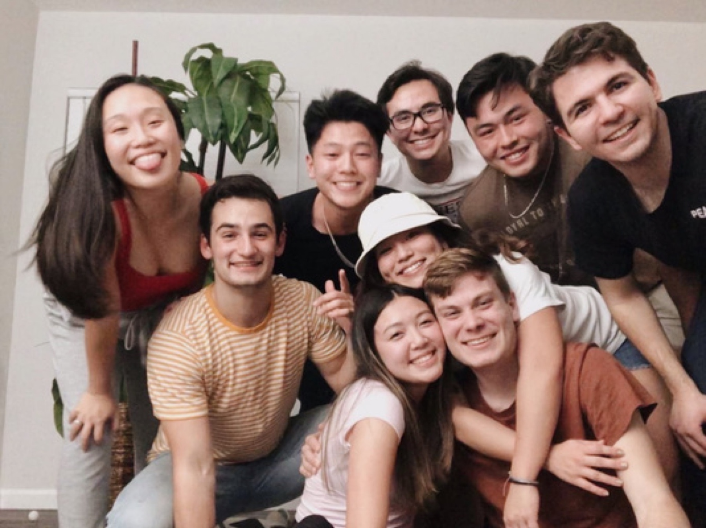
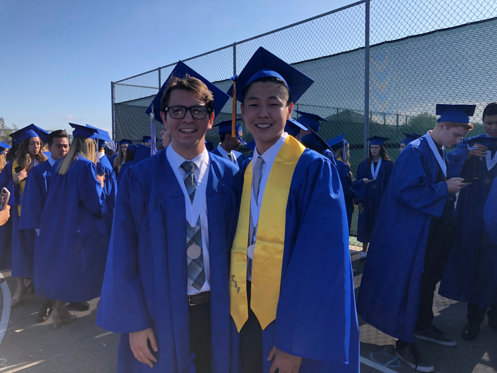

Closing·From Kris
Nepal, you have always been such an important part of our sense of community and the heart of the SD boys group. No matter where we were or what was going on, you had this natural ability to bring people together and make every moment feel lighter, warmer, and more meaningful.
Your spontaneity, creativity, and passion for life have inspired so many of us, and I honestly don’t think you fully realize how much of a positive impact you’ve had on the people around you.
I’m beyond excited for everything ahead for you, and I know this is only the beginning of an amazing new chapter!!!
— Kris
